Flip - Unity Game Project
This is my latest project: Flip, it is a simple addictive game created entirely in Unity and Photoshop, all assets are created by me. The game was created over a couple months, at first it was quite difficult because the first thing we had to do was create the mechanic, this was probably the hardest part because I do not have a ton of experience with coding in 3D Unity and I struggled to remember some of what I learnt about Unity in my first year. Below is a link to the release of "Flip" and a few screenshots:


Awoken - Street Scene Project
This is a project I have just completed as part of the AINT253 module, it is basically a explorer horror type game based in an abandoned street scene, all models in the street scene were created entirely by me in 3DSMax and most of the textures were created by me in Photoshop. Here are a few screenshots of the game:
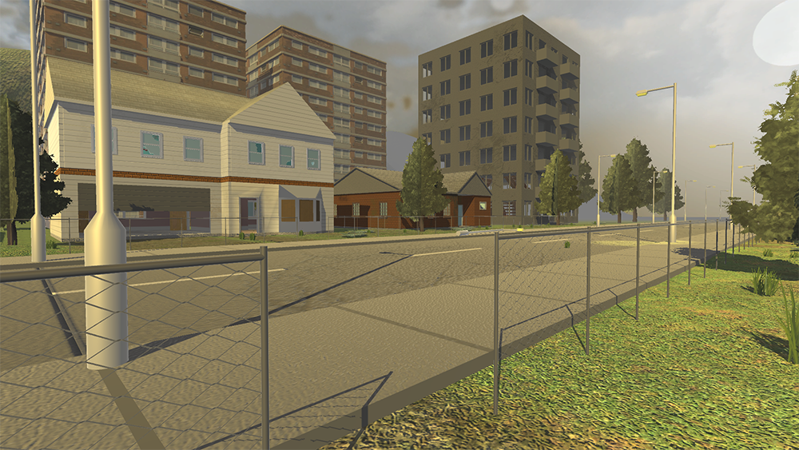
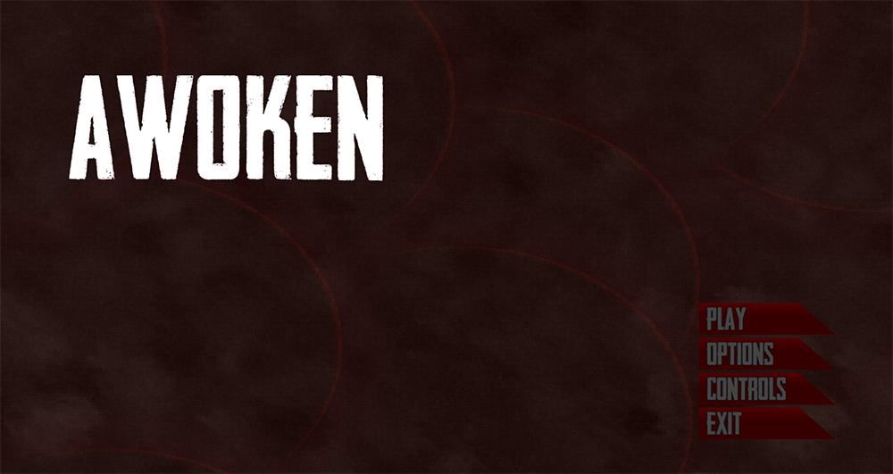
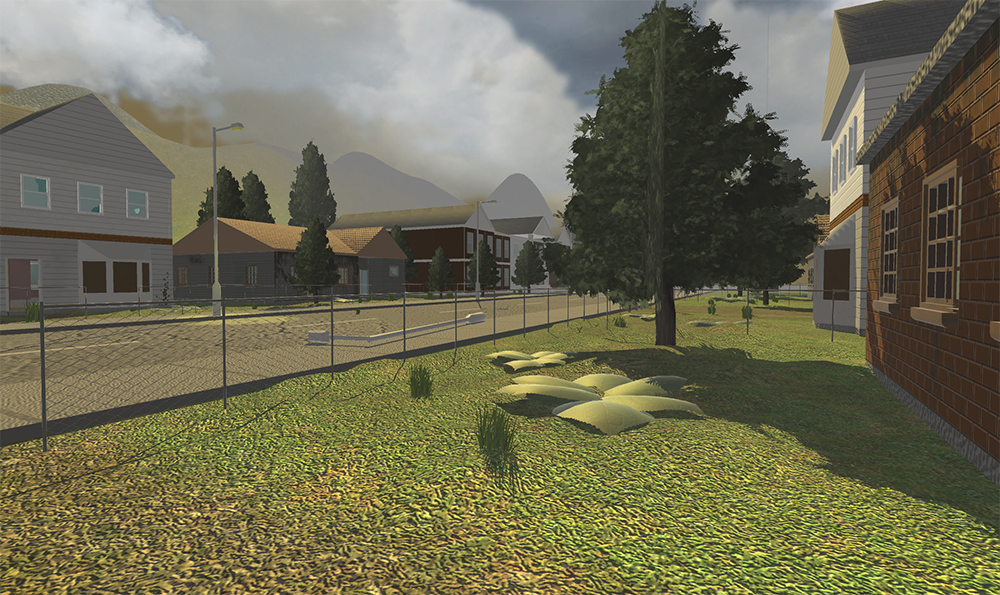
AINT152 Week 12 - Final Week
After some playing/testing of the game, I realised that pickups can spawn on top of each other causing the effect to double/triple, after some research on how I can fix this and a lot of testing, I fixed the problem by adding a check if the pickup exists to the pickup spawner scripts, this means is the pickup already exists it will just recall the method and not spawn.
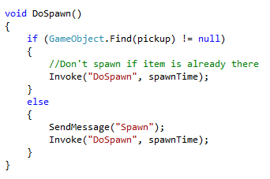
Now that everything is working how I intended, I decided to work on the main menu screen and game over screen graphics, at this point they looked very dull and did not fit with the theme of the game. I started off by getting a new font for the all the text, I chose a blood style font to go with the style of the game, I really like how the font looks and it works really well in solid red or white. I also added the controls to the main menu screen, even though the controls are simple, some players may not figure out the controls quickly. The background image was created in photoshop, I made it by starting off with a sunburst style effect using two dark shades of grey, I then imported in a grundge texture and played around with the opacity and layer type to make it look good, I'm really happy with the outcome.
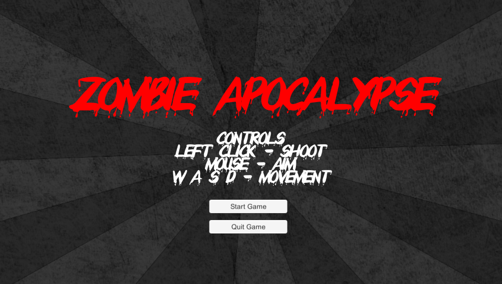
The only thing left now was to work on the game over screen, this took a LOT longer than expected. The first thing I did was add a button to return to the main menu, this did not want to work and lead to me spending over 2 hours trying to figure out how make the button return the user to the main menu, even though I was doing it exactly like on the working main menu screen buttons it just did not work, eiher not allowing me to find the correct function from the script or just making the button unclickable. After finally making it work I then added text to display the players final score and time survived, this took a lot of trial error and trying different ideas to make it work correctly, in the end it does work and I also made the timer become hidden when the game is over.
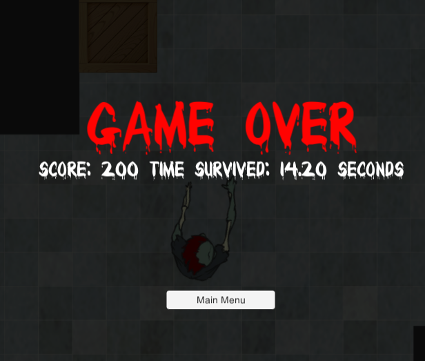
At this point I am happy with the state of the game and think it is ready for submission although a few tweaks may be needed.
AINT152 Week 11
Some large changes have been made to the game this week, the first change is adding a third health pickup into the game, and making all pickups respawn. Previously all pickups could only be used once however they now respawn every 30 seconds for the player to use them again, this really makes the game more strategic by allowing the player to think about using pickups when the game gets more difficult. The pickup spawners essentially use the same code as the zombie spawners. Speaking of zombie spawners, I have added a bones graphic in the location of each of the zombie spawners, this allows the player to have an idea of where the zombies are coming from and also adds to the creepy effect of the arena.
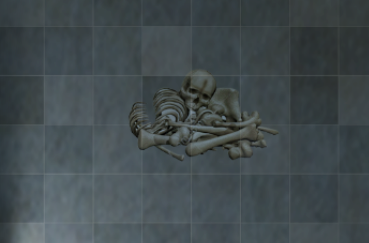
Another small change to the arena is a second entrance I have added to the top of the pickup room, this prevents players from camping in the room while zombies can not get in.
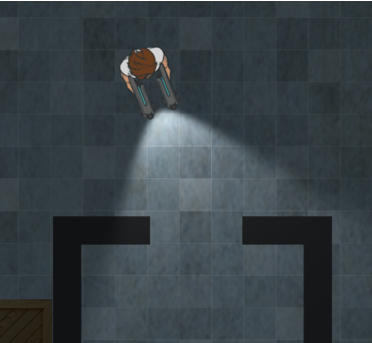
The biggest update this week is adding a variety of new sounds to the game, the first being a zombie groan sound when the zombies spawn, this indicates when new zombies have spawned and therefore gets faster making it more intense as the respawn times decrease. A human "ouch" sound has been added for when the player takes damage, an achievement type sound effect for when the player collects a pickup, and finally some creepy background music. Adding all these sounds really adds to the immersion of the game and completely steps up the spooky vibe of the game.
AINT152 Week 10
After thinking about ways to have the difficulty slowly increase in my game, I decided to try have the zombie respawn times decrease, I did this by having the spawnTime variable be decreased by 0.5 on every spawn, I also had to limit the shortest respawn time to 1.0 to avoid an overload of zombies causing the game to crash.
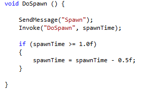
A time decrease of 0.5 seconds and a limit of 1 second were not the original values I chose, these took some time and testing to get the right balance so the game is not too hard too fast and also not too easy and lasts forever with no challenge.
I have also fixed a bug that caused the blood splat sound on zombies death not to play, I originally had the sound attached to the zombie prefab as a component and then used code to activate it on death, however I realised this did not work because the zombie game object was destroyed meaning the sound could not be played. I fixed this and made it much simpler by attaching the sound to the blood explosion animation and having it "Play On Awake".
Another small change is making the main camera delay when following the player much shorter, I did this because I had feedback that the camera was too far behind the player when moving forward, causing the player to be unable to see ahead in the direction its moving.
AINT152 Week 9
This weeks progress on my project involved me finally fixing a bug that caused the zombies only to damage the player on collision, the zombies now continue to damage the player if they stay colliding, this has been a bug in the game for weeks now so I'm happy it is finally fixed.
Something new I added to the game is an icon on the heads up display to show when a pickup is active, it is basically the same image for the pickups but displayed in the top right corner for the 10 seconds that the pickup is active. It was suggested in my feedback that I added some sort of visual indication of when pickups are active, so this is what I came up with.
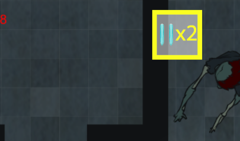
It was more difficult to do that I thought it would be, after struggling to make it work, I ended up having to create an instance of a game object and having a method to hide and show the icon, the methods were then called by the script used by the pickup. I had to create an instance of the game object or else it did not with the static methods.
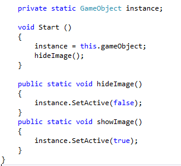
AINT152 Week 8
This week mainly consisted of feedback on the current game, and not much progress. A small change I did make to the project was adding the lighting effect and flashlight effect to the arena, this was removed when I added the new arena and I forgot the re-implement it, it now makes the arena and game look a lot nicer. The arena was made in Photoshop CS6, I started creating it with the floor pattern, I used a basic tile pattern which I made slightly transparent with a grey colour layer underneath and a grunge effect image on the layer above to make the tile pattern less bright and colourful, and to give it a dirty effect.
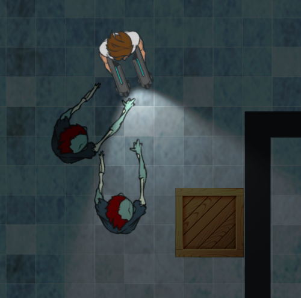
The main session this week involved getting feedback on my game from three other students in my class, and two of the teachers. This includes the game being played and demonstrated to each, and having a form being filled out that covers every aspect of the game, allowing me to find out students opinions on what is good and bad in the game. The teacher's feedback allowed me to find out what needs to be done or changed, and what is currently missing, all this feedback will be very helpful and definitely push me in the right direction to complete the game.
AINT152 Week 7 Redoing the Zombie Shooter arena
My most recent work on the zombie shooter project has been creating a completely new arena/level for the game, instead of the generic one supplied by the course. I originally planned for the arena to be in an abandoned hospital building however that changed slightly while creating it.
The arena was made in Photoshop CS6, I started creating it with the floor pattern, I used a basic tile pattern which I made slightly transparent with a grey colour layer underneath and a grunge effect image on the layer above to make the tile pattern less bright and colourful, and to give it a dirty effect.
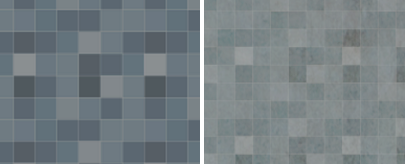
The next step was adding rooms and a border to the map, this was just done using basic grey rectangles.
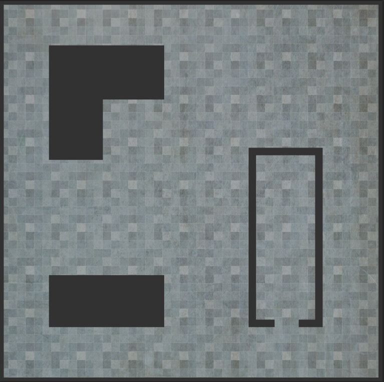
The arena was now ready to be implemented into the game, to make it work correctly I had to save the arena as multiple different images of the different layers, this includes the main texture layer as the background, then each individual room/wall as its own image. This is to make each of the rooms its own sprite in Unity so the player can collide with them. The final step was to add some wooden box sprites that I created, I put a few of these around the arena for aesthetics, this is the final product:
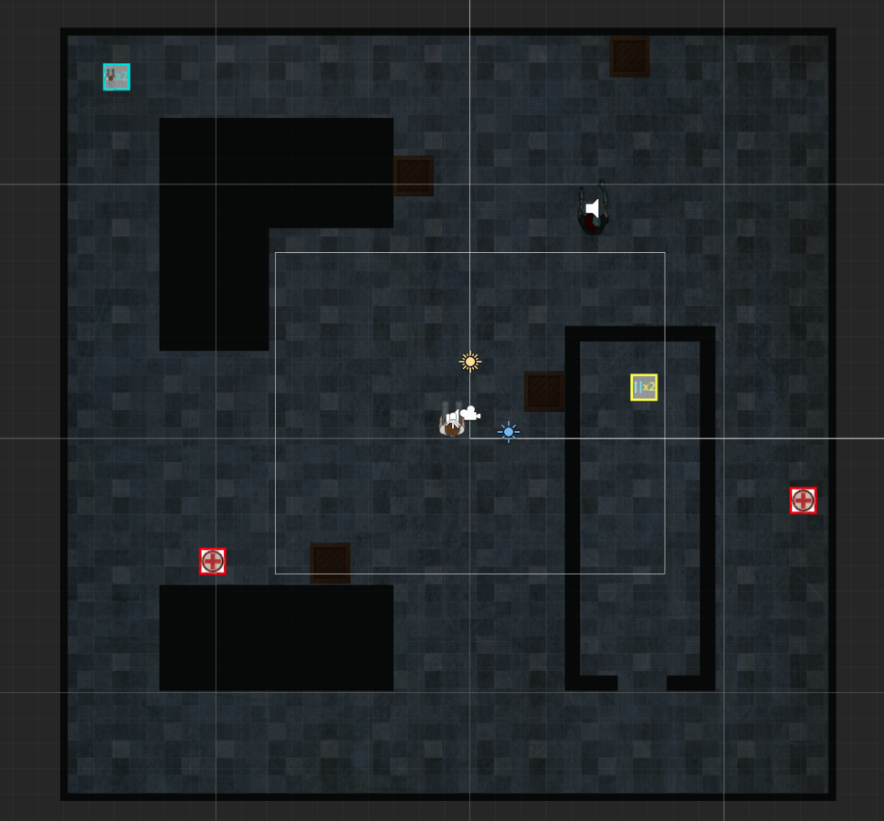
AINT152 Week 6 Adding a start screen and game over screen
A big addition to the game is the start menu/start screen, the game now starts on a screen with the title and some buttons to start the game, the game also returns to this screen on death, soon I will add a game over message before returning to the start screen. The start screen was doing using a separate scene with a canvas containing buttons that change to the main level using code.
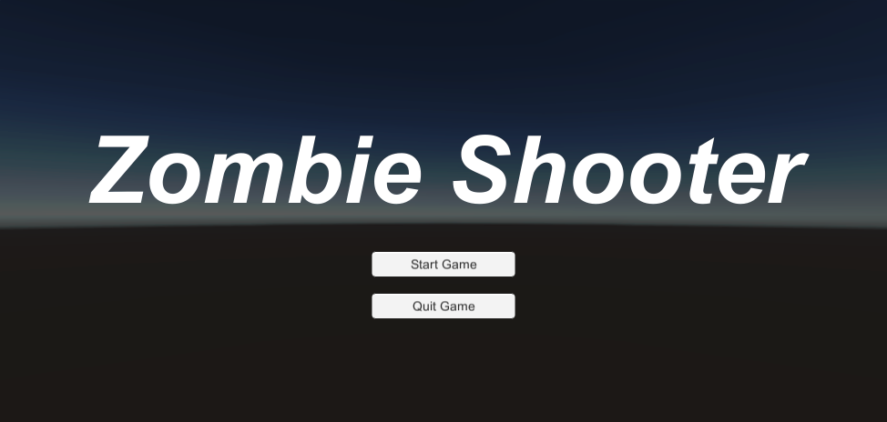
I have also created a simple game over screen, the screen is shown on the player’s death, it currently displays red “Game Over” text over the game and freezes the game while showing the player’s final score and time survived, a bug with this is that the timer does not stop when the game ends, however this should not be much of an issue to fix. The game over screen is currently very basic however I would like to it look more professional with some 3D text or blood effects around the text. I aimed to have the game display the game over screen for 10 seconds then revert back to the main menu, however this is not currently working.
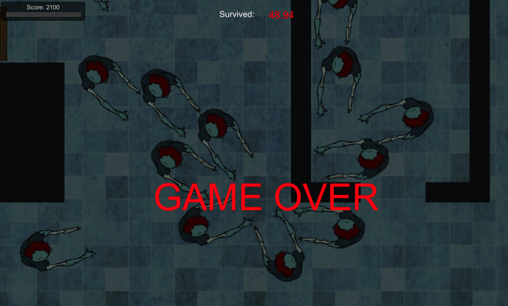
AINT152 Week 5 Zombie Shooter Progress
I have recently made a few changes to the project, the first being adding a circle collider as the second collider to the zombies, thus fixing the bug where the player gets stuck between the zombies arms. After a lot of time and researching I managed to get the powerups/pickups working correctly and how I wanted, this was done by sending calls to other scripts for example to change the speed, then 5 or 10 seconds later sending another call to set the speed back to normal.
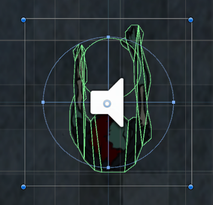
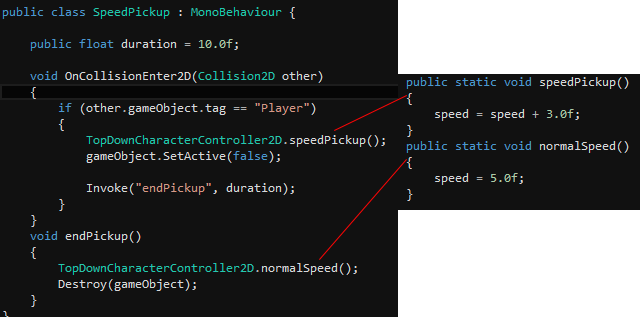
Another small change is the timer I have added at the top of the game screen, this timer counts up from zero to display the amount of time the player as survived in red text, I think this is a nice touch to the game and allows the player to aim for a high amount of time survived, as well as a high score.
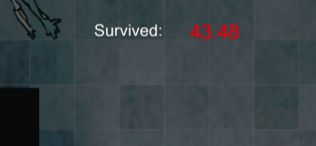
AINT152 Week 4
In this weeks session I added sound effects to my project, this included finding a suitable sound effect for the player shooting, the sound effect also had to be free for non-commercial use, this made it more difficult to find exactly what I wanted. After a lot of searching I found the perfect sound effect that sound similar to the sound of a laser, I then implemented the sound to play in sync with the bullets. In addition to the bullet sound, I attempted to add a blood sound effect to play with the explosion effect on the zombies death, however I could not make it work correctly, so it is now a bug I need to fix.
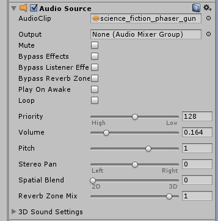
I also achieved adding zombie spawns into the game, this was a big step for the game making it more playable instead of just the one zombie, after some tweaking with the spawn I duplicated it a few times to make four zombie spawners, this now gives the player a challenge and makes it difficult to survive.
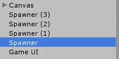
The final thing I added was a game UI, I original created the health bar last week, and I have now added to this with a score counter, each zombie kill adding 100 score points to the player's score.
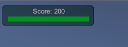
AINT152 Week 3
This week I have added a few new features to my zombie shooter project, the first thing is a blood explosion effect when shooting the enemy zombies using animation, the blood explosion was created as a prefab, the effect adds to the game's aesthetics and shows some visual feedback to show the zombie has been damaged. In the future I would also like to add a knockback effect to the zombies when they are hit. I also started working on the player animation so the guns are only displayed while the player is shooting, however this is not yet completed.
A big thing I added to the project is a health bar displayed in the top left corner as part of the HUD, this displays how much health the player currently has in the form of a slider, I have chosen to keep the HUD simple and clean right now, however I may add graphics to it in the future if I get a chance. In order for this to work I also gave the player a set amount of health which is 100, and made the players health decrease on collision with the enemy zombies. An issue with currently is that the zombie only decreases the player’s health on contact, and will not continue to attack the player if they remain touching. I have also added the ability for the player to use the health pickup that I previously created, it gives the player 50 health on collision and then destroys itself therefore it can only be used once.
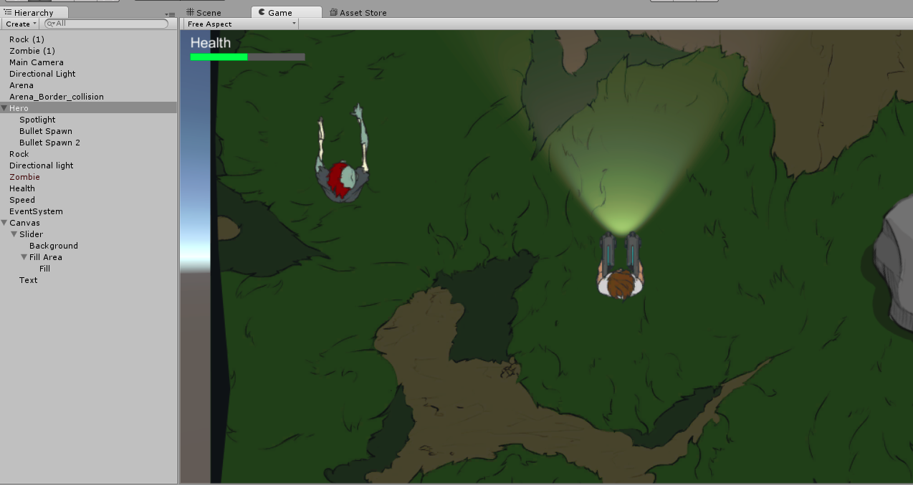
AINT152 Week 2
This week allowed me to really get the basic mechanics down for the game, first off I followed the pdf tutorials to help create the basics of the game, the first of these tutorials explained how to create a bullet for the player to shoot that damages the zombie. The bullet is created in Unity as a “prefab” meaning it can be used in any scene, I adjusted the bullet to deal one damage on collision with the zombie that has ten health, after 10 hits this will result in the zombies death. The bullets are spawned and shot by holding left click, however I may adjust this and have a bullet spawn on each click. Using the follow up tutorials for this week I also made the zombie move and follow the player at a slower speed, however interaction with the player does not do anything yet. There is currently a bug with the zombie and player that causes the player to get stuck between the zombies arms and not be able to move away.
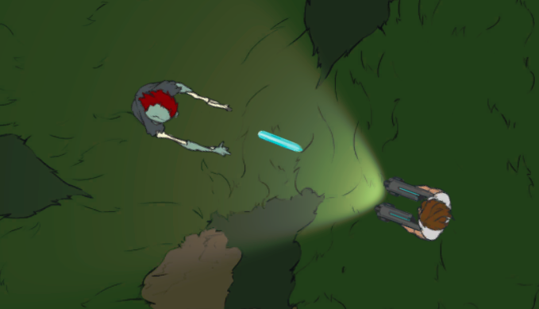
I also added atmosphere to the game as seen above, this is done using a flash light effect and by darkening the rest of the scene, although the dark area of the scene is still fairly light for the player to be able to see around without much difficulty.
Some other things I added to the game are a second bullet for the players second gun because originally he only shoots one bullet, this was done simply by creating a second bullet spawn and positioning it by the second gun, and then adding the same “Shoot Bullet” script to the hero, therefore making him shoot two bullets. I also created some simple artwork for two in game item pickups; health and double speed, I then added these into the scene however the player cannot yet interact with them, I will also be adding more item pickups in the future.
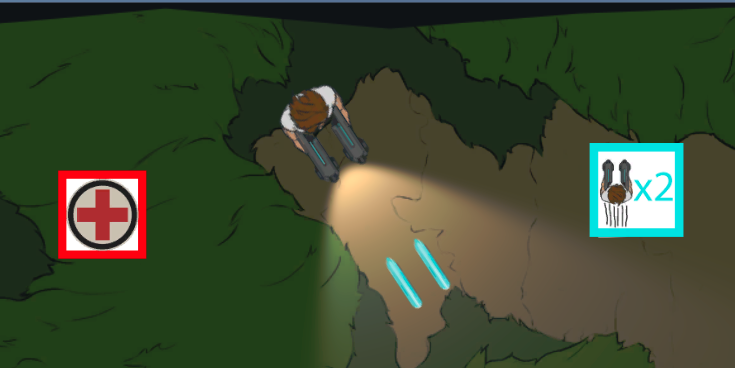
AINT152 Introduction
I have just started a new module AINT152, this is the Games Workshop module, the overall outcome of this module is to create a “top down zombie shooter” game using “Unity”. The first session started off by opening up Unity and being introduced to the basics, this includes each of the panels in the program and their uses, and some of the basics tools/options. I then made a new repository for this project on bitbucket and downloaded a template for the zombie shooter which I then pushed onto the new repo, I then added the artwork assets provided by the module using a pdf tutorial to show me how, this was the first step to start off the Zombie Shooter project.
Some tutorials supplied by the course allowed me to continue work on my game, the tutorials show how to complete tasks in simple and user friendly steps, the next three tutorials taught me how to add the player into the scene, make it move using the keyboard and making it point in the direction of the mouse. I completed these tutorials over the first two sessions, this also helped become more familiar with Unity. After finishing the tutorials I then experimented with Unity in my own time and added some more of the assets into the game and made it possible for the player to collide into them, and also a border around the arena to prevent the player for leaving the map. In the first session we were also introduced to “Slack”, this is essentially a website or app that allows the entire class and teachers to communicate and ask questions.
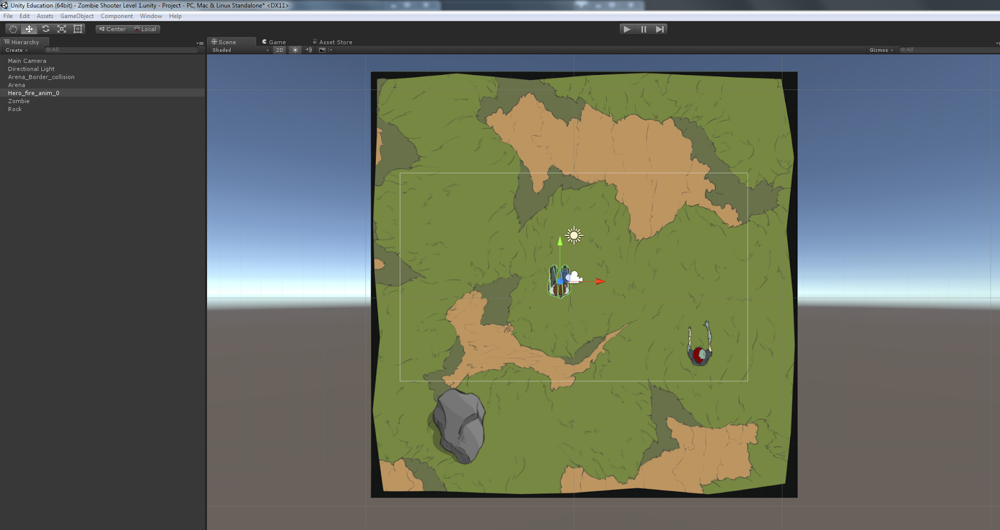
The screenshot above shows the progress I have made so far at the end of the first weeks session, as you can see I have the player character in the game as well as the terrain and a few objects such as the rock and a zombie that does not currently move.
Website Accessibility
To make sure my website is accessible for everybody I have used wave.webaim.org to check the accessibility of the website, no errors were found meaning the website is visually suitable and can easily be used without the need of a mouse, however there was 1 contrast error which I have addressed by changing the grey text on grey background to a darker colour. The navigation bar list items were showed an alert as "redundant title text".
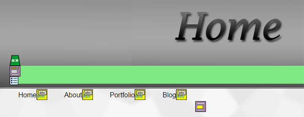
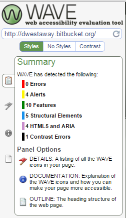
Crossplatform Compatibility
Using browershots.org, I have tested the compatibility of my website across many browsers and operating systems including Firefox, Internet Explorer and Opera on Mac, Linux and different versions of Windows, the website appears correctly on almost all platforms including older versions, however interactivity may suffer on older versions of the browsers.
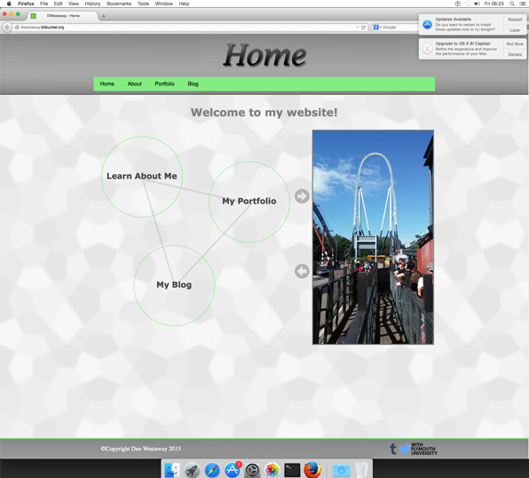
The image below shows how my website appears on various different operating systems and browser verisons.
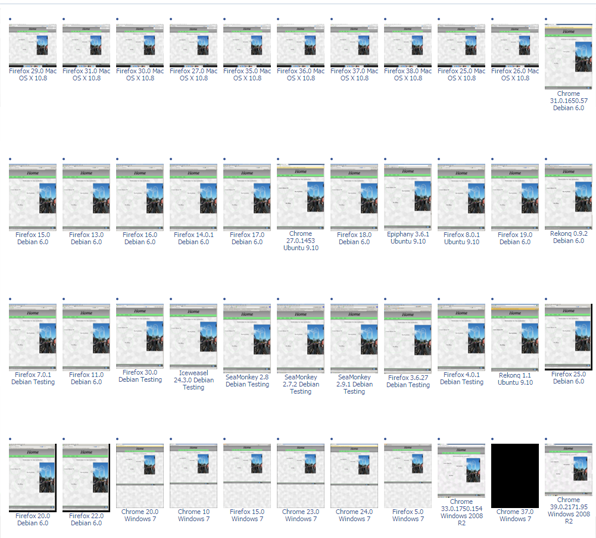
Phaser Games Mechanics Making
I have been searching through arcade physics examples on the Phaser website and thinking about ideas from games I have played, I then decided on attempting to create a double jump mechanic, after some research and tweaking I made this possible however not working perfectly because of the fact that a key press can also be held, causing the player to fly. I also thought of the idea of the player sliding on ice, in theory this could be used on levels in a game which incorporate an ice theme, I also added a shooting mechanic for the player allowing him to shoot snowballs, I learnt how to do this using the phaser arcade examples.
Web Game Technologies - Week 5, 6 and 7
After learning the basics of Javascript last week, we went back to some final CSS layout practice, in the next few sessions we learnt more about Javascript and were shown the use of JQuery, JQuery is a Javascript library that makes things easier. In the session we also set up Google Analytics, this will allow me to track who is viewing my website and from where it is being viewed. In the next session we recapped JQuery then were shown "The Game of Life" and taught how to start coding it, I found this difficult and did not manage to completely code the game. Next session was the introduction to Phaser, Phaser is used to make in browser games which is very interesting, we followed a tutorial on the Phaser website to learn the basics and create a simple game, in my spare time I worked on the game and added my own assets and made the game 2 player.
Website Research
Recently I have been researching websites and potential website layouts to give me inspiration for the design and structure of my own website, during research I have noticed a lot of websites follow a similar structure of a navigation bar along the top with a large title image above it, therefore I will incorporate this general layout into my own. I have also noticed it is important to keep the colour scheme to only a few colours to not overwhelm the user, I will be chosing a colour scheme with this in mind, I have also chosen to keep the website simple and easy on the eyes.
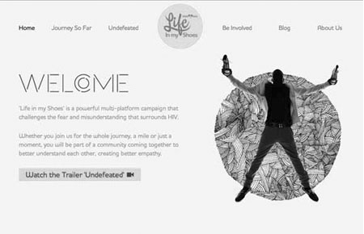
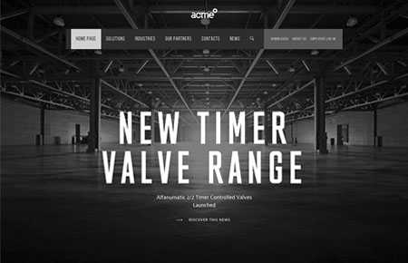
Web Game Technologies - Week 3 & 4
At the beginning of week 3 we recapped the basics of CSS, I then downloaded and setup a HTML boilerplate as the foundation for my website. In the next session we leart some more CSS then put our CSS skills to the test with some example layouts to create, this exercise was helpful because it will be essential to know how to create layouts for in the future. In the final session of the week we recapped what we learnt and moved onto the basics of JavaScript in the next session, this included learning about the DOM (Document Object Model), Events, and completing a basic task of creating FizzBuzz using Javascript.
Web Game Technologies - Week 1 & 2
The first week has introduced me to Github and pushing GIT repo's to Bitbucket using SourceTree, this will be useful in the future when updating and working on my website. I was also taught how to use local web servers for testing a website and also the aims of this module. In the next session we moved on to learning some basics of HTML for example tags and the basic layout of a HTML document, we then put what we learnt to practice with some HTML exercises. We were then introduced to some CSS and how it is used with HTML.
Dev 101 Introduction
During the Dev 101 section of AINT154 I have learnt a variety of valuable skills, first of all we were shown some of the more advanced features of Windows and Mac, this includes the registry, keyboard short-cuts etc, I then made use of resources provided by the course to quickly run through PDF files, ZIP files, screen recording and converting media. We then covered what services may be useful to us, how to effectively use search engines, how to have a good web presence and how to create a VPS, all this material is very informative and useful and will be very beneficial for the entirety of the course.